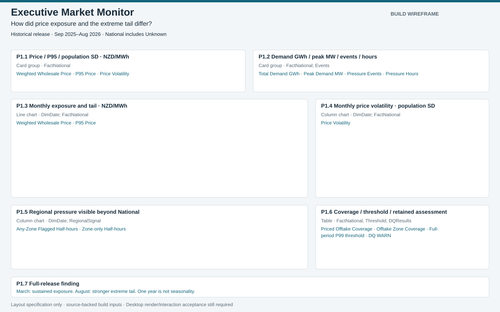
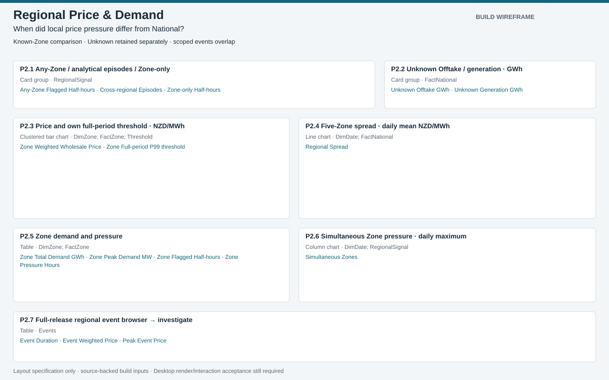
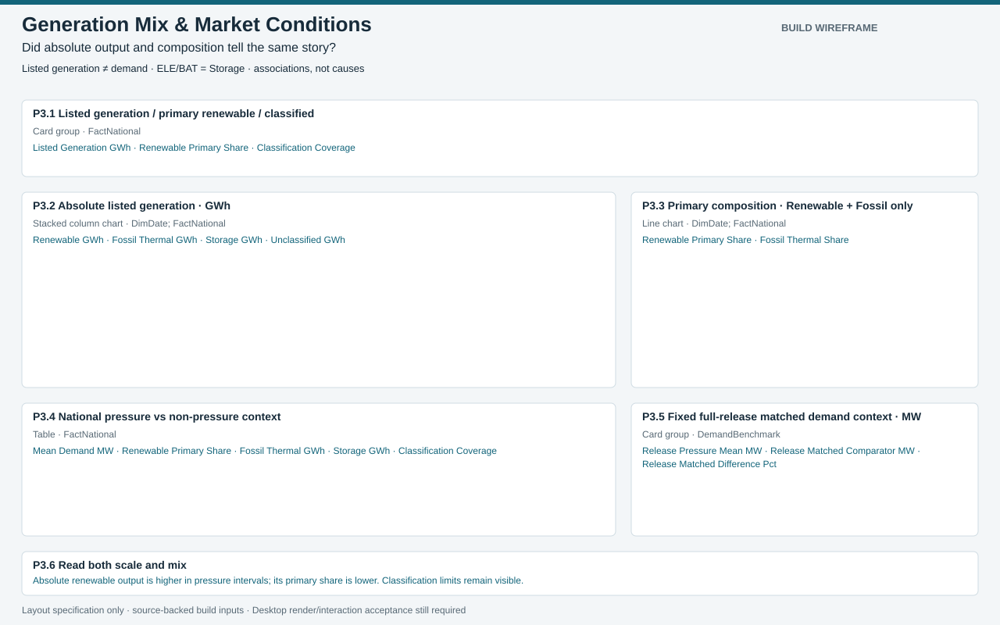
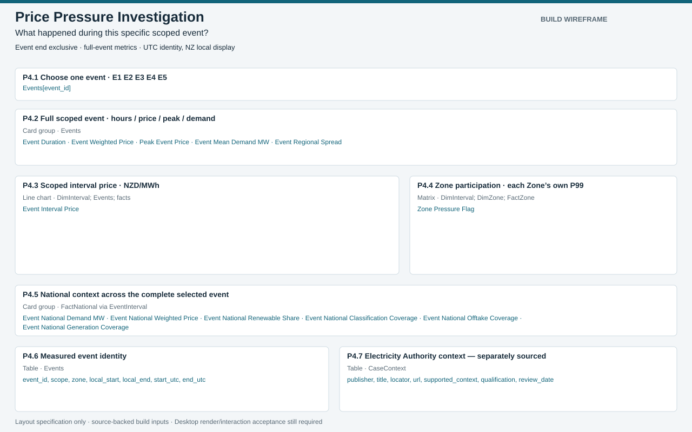
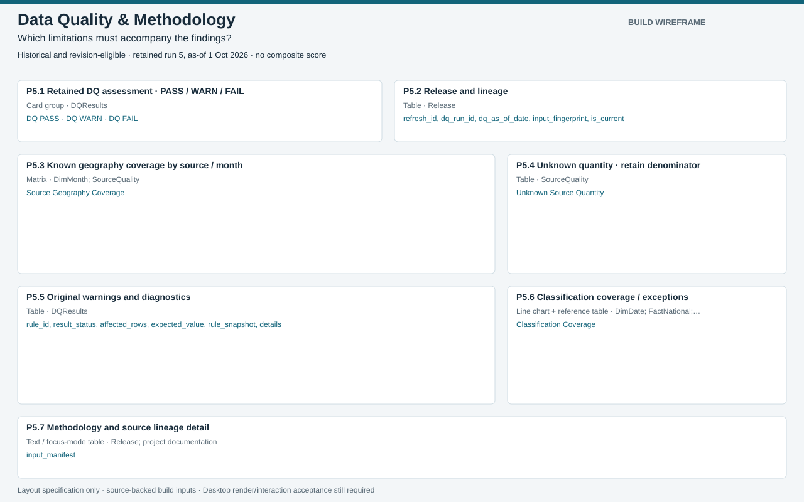

Phase 6 build package — layout review
Wireframes only. No working PBIX/PBIP or rendered Power BI dashboard is claimed.
Executive Market Monitor

Regional Price & Demand

Generation Mix & Market Conditions

Price Pressure Investigation

Data Quality & Methodology
